mertefe@sysplex ~ $ whoami


mertefe@sysplex ~ $ ./connectome.sh

mertefe@sysplex ~ $ ./contributions.sh

mertefe@sysplex ~ $ ./upstream.sh

mertefe@sysplex ~ $ whoami
mertefe@sysplex ~ $ ./ipl.sh
